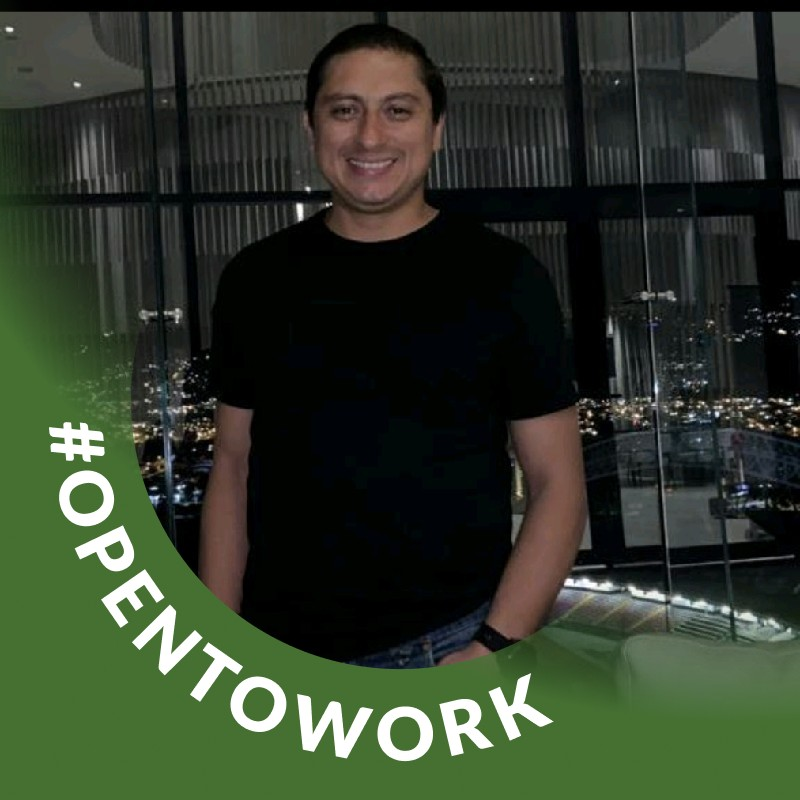
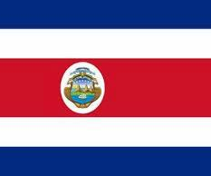

Javier Zuniga Mendoza
About me.
My name is Javier Zuniga Mendoza. I am a student at Brigham Young University-Idaho, studying Web Development. I am currently working on my degree in Web Development and looking forward to a career in the field. I am from Costa Rica and I am a member of the Church of Jesus Christ of Latter-day Saints. I am a father of 2 beautiful children, one is a Young Women and the other one will be a Young Man next year.

Costa Rica.
Costa Rica is a country in Central America known for its biodiversity and eco-tourism. It is a tropical country where we have the opportunity to visit the Pacific Coast and the Caribbean Coast. We have some very beautifil mountains, beaches and Volcanoes.
